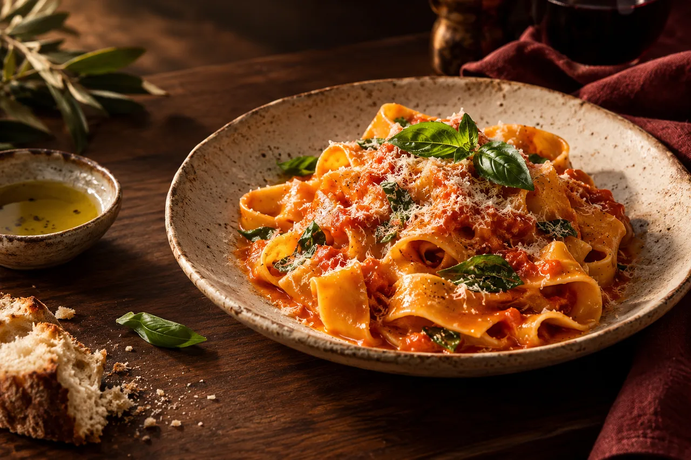

Eine interaktive Speisekarte mit beispielhaften Gerichten.
Tomate · Basilikum · Parmesan
Ricotta · Spinat · Salbeibutter
Ofentomate · Mozzarella · Kräuter
Probiere die Tischwahl aus. In diesem Konzept wird keine Reservierung übermittelt.
Wähle eine Beispiel-Uhrzeit.